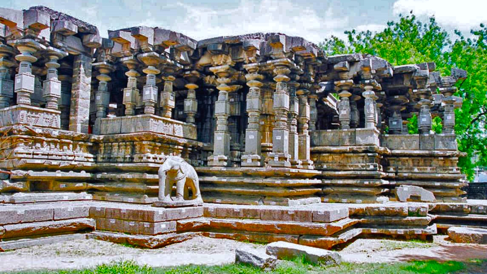

About 1000 Pillar Temple
One of the most famous monuments in Telangana, the Thousand Pillar Temple was built by the Kakatiya King, Rudra Deva in 1163 AD. The temple represents the intricate Chalukyan style of temple architecture at its finest. Dedicated to Lord Shiva, Vishnu and Surya it is loaded with meticulously designed pillars, richly carved icons, and rock cut elephants that represent the incredible detailing of Kakatiya architecture.